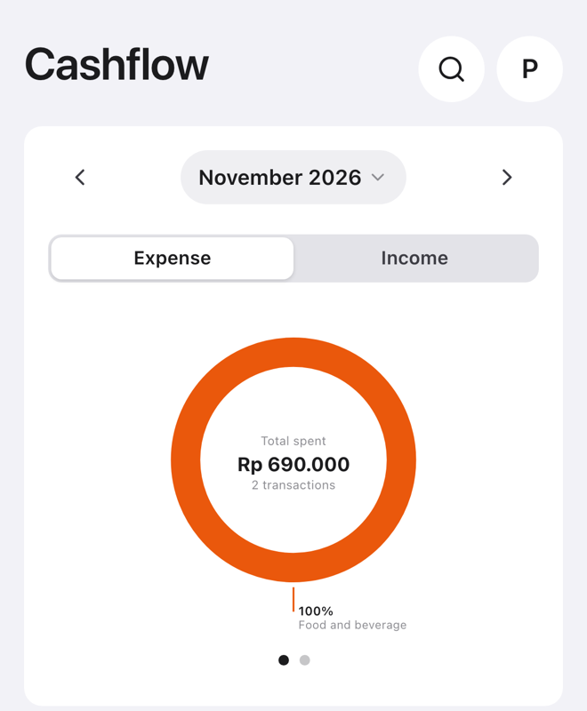
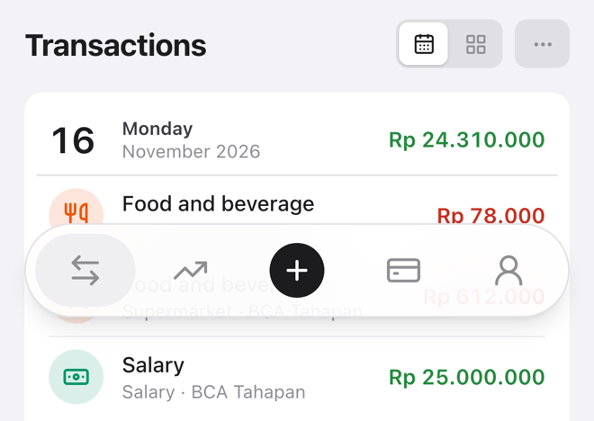
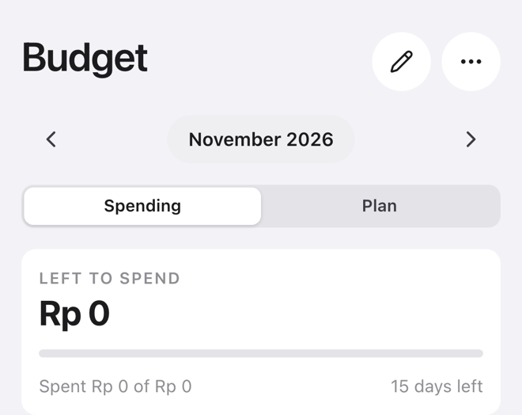
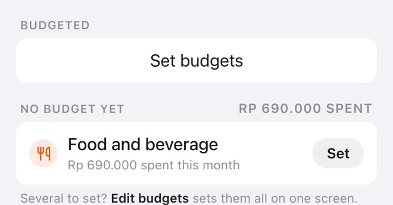
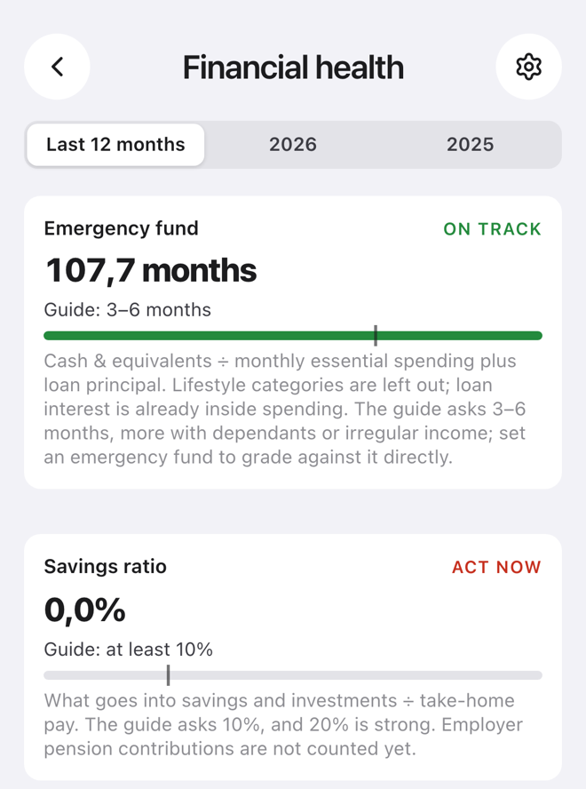
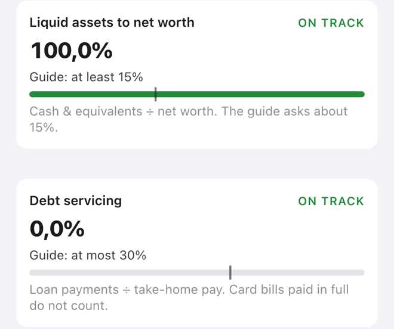

Grey "UNCHANGED" = today's page exactly as it is now (real screenshots, test figures). Green "NEW" = the only thing added. Nothing is removed, and the Essential / Lifestyle marks on categories stay as they are. "Future" is used as the third word here as an example (Savings, Growth, Reserve or Kept would read the same). Invented figures in the new parts.
The ring page and the bars page stay. A third page is added after them; the list below stays as it is.
Today
Ring page (page 1 of 2), then the list.


After · swipe twice
Same card, new page 3. Ring and bars pages untouched.
Everything on Budget stays. One box is added between "Left to spend" and the categories. Today's "Essential and lifestyle" sheet in the ⋯ menu also stays (it can be removed later if this box makes it redundant — only if wanted).
Today
Left to spend, then Budgeted / No budget yet.


After
Same page; the new box sits in between.
Every card on Financial health stays, in the same order. One card is added, in the same style as the others. Note: "Savings ratio" already exists there and reads close to "Future"; the new card adds the split of all three.
Today
Emergency fund, Savings ratio, then Surplus, Liquid assets… (rest unchanged).


After
Same cards; the new one sits after Savings ratio.